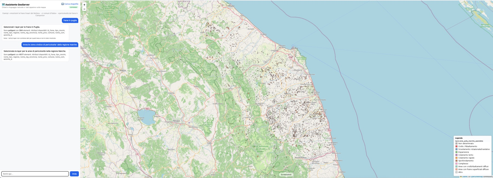

Ask your GIS stack in plain language.
An intelligent MCP server that drives a GeoServer instance through an LLM agent, plus a chat + map web UI and a fully Dockerised, domain-agnostic stack. Ask “show me the linear landslides in Molise” and the matching layers render on the map.

What it does
One async core — the GeoServer client, the geo_* tools and the shared ingest / catalog / styling modules — serves the MCP agent, the web UI and the data bootstrap.
Natural-language GeoServer agent
A Microsoft Agent Framework agent with 33 geo_* tools, served over MCP (stdio or streamable HTTP).
Chat-first map UI
Requests resolve to published layers, rendered on Leaflet with live WMS legend, admin-area clipping and per-layer CQL.
Domain-agnostic catalog
Layer resolution reads names, titles, abstracts and keywords from WMS capabilities. There’s no vocabulary hardcoded in the code.
Idempotent data bootstrap
Drop shapefiles and GeoTIFFs in ./data: they land in PostGIS or as zero-copy coverages and are published automatically.
Config-driven styles
Thematic SLDs (categorical, line, point, raster ramps) generated from a YAML file and assigned by layer-name rules.
Terrain enrichment
Elevation, slope, aspect and curvature for any vector layer, sampled from a DTM on demand.
Pluggable LLM
Host Ollama, Ollama Cloud, Anthropic Claude, or any OpenAI-compatible endpoint (LiteLLM, vLLM, llama-server).
Safe by default
A function middleware blocks destructive tools unless GEO_ALLOW_DESTRUCTIVE=true.
Native multi-arch images
amd64 and arm64 images published to GHCR by CI, with no QEMU emulation on Apple Silicon.
Architecture
The LLM is reached lazily over the network and never gates startup. The browser only talks to the web UI, which proxies WMS.
Quickstart
Requires Docker + Compose and an LLM: host Ollama by default, or Ollama Cloud, Anthropic or an OpenAI-compatible gateway.
git clone https://github.com/agent-engineering-studio/mcp-geo-server
cd mcp-geo-server
ollama serve & # host Ollama (default provider)
make ollama-pull # pull OLLAMA_LLM_MODEL onto the host
make build # app images + GeoServer/PostGIS for your arch
make up # start the stack| Service | Endpoint | Role |
|---|---|---|
webui | http://localhost:8000 | Chat + map UI, WMS proxy, shapefile upload |
mcp | http://localhost:9000/mcp | Intelligent MCP server (streamable HTTP) |
geoserver | http://localhost:8080/geoserver | GeoServer 2.28 |
postgis | localhost:5432 | PostGIS 16-3.4 |
geo-init | one-shot | Loads ./data and applies styles |
Call the agent from any MCP client:
from mcp.client.streamable_http import streamablehttp_client
from mcp import ClientSession
async with streamablehttp_client("http://localhost:9000/mcp") as (r, w, _):
async with ClientSession(r, w) as s:
await s.initialize()
res = await s.call_tool("geoserver-agent",
{"task": "How many features are in topp:states?"})
print(res.content[0].text)AI roadmap
Where the AI layer goes next. The full analysis, with file references, is in docs/ai-roadmap.md; the protocol migration is covered separately in the MCP 2026-07-28 upgrade plan.
Making the current AI better
NL → layer evaluation
A golden set of Italian and English requests scored on layer precision and recall, CQL match, invalid-JSON rate and latency. It’s how we compare models and prompts on evidence.
Structured outputs
Schema-constrained responses, with layer names as an enum, replace brace-scanning JSON extraction. Hallucinated layers can’t be produced, and parse failures stop surfacing as HTTP 502.
Semantic catalog retrieval
Layer embeddings in pgvector, inside the PostGIS the stack already runs. Only the top-k candidates reach the prompt, so its size stays constant as the catalog grows.
CQL guardrails
Parse LLM-generated filters to an AST and whitelist attributes and values against the selected layer before they reach WMS.
Prompt caching & model routing
Use cached static prefixes and a small local model first, then escalate to a larger one on low confidence or invalid output.
GenAI observability
OpenTelemetry spans with tokens, latency, model and validation outcome, exported to a collector in the compose stack.
New AI features
AI metadata at ingest
When a layer is published, an LLM writes its title, abstract, bilingual keywords and column descriptions from the schema and sample values. That feeds the resolver directly.
Styles from natural language
“Colour landslides by movement type, red-orange.” The model emits a validated styles.yml entry instead of raw SLD.
Multi-turn map refinement
“Only high hazard” → “add the DTM” → “drop rockfalls”. Each turn sends a delta on the current map state, with the state kept client-side.
Analytical questions
Answer how many, which and where most: WFS aggregates first, then sandboxed read-only text-to-SQL on PostGIS for spatial questions.
Automated area reports
A workflow combines statistics, DTM metrics, the map image and the legend into a written risk sheet for a municipality or area.
High-level MCP tools
geo_search_layers, geo_resolve_request, geo_admin_scope, geo_describe_layer, plus MCP prompts and the catalog as resources.
Visual map QA
A vision model checks the rendered map for empty results, opaque rasters covering vectors, or unreadable palettes.
Assisted data quality
Suggests a missing SRS from the coordinates, detects encoding issues and flags invalid geometries in an ingest report.
Landslide susceptibility ML
The landslide inventory plus DTM derivatives (already computed) train a model whose output is published as a susceptibility raster.
Phases
- 01–2 days
Close the blockers
Pin
mcp<2, bind MCP to localhost by default, add auth and rate limiting to the web UI, update the default Claude model, cache the catalog. - 14–6 days
Measure, then constrain
NL → layer evaluation, structured outputs, CQL guardrails.
- 21 week
Extract the resolver, feed it metadata
Move the resolution logic into the core package, make admin levels config-driven, generate AI metadata at ingest, add OTel.
- 31 week
Scale the catalog
pgvector retrieval, prompt caching, model router with fallback.
- 41–2 weeks
Conversational map
Multi-turn refinement, model-based intent and places, styles from natural language.
- 51 week
High-level MCP tools
Exposed alongside the MCP v2 migration from the upgrade plan.
- 62–3 weeks
Analysis & reports
WFS aggregates, then text-to-SQL, area reports, visual QA.
Rule of thumb: from phase 3 on, a feature only ships with an evaluation case that measures its effect.